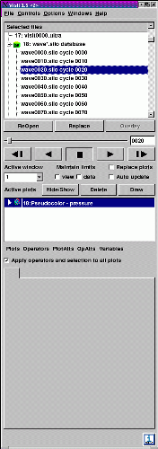

VisIt's Main Window, shown in figure, contains three main areas: the File panel, Plot Manager, and Notepad area. The File panel is located at the top of the Main Window and it allows you to open databases and set the active time step for animations. The middle area of the Main Window is the Plot Manager area. The Plot Manager area contains controls that allow you to create and modify plots and operators. The bottom area of the Main Window is the Notepad area. The Notepad area is a blank area to which various VisIt windows can post. Each time a window posts to the Notepad area, a new tab is created in the Notepad and the posted window's contents are added to the new tab. Clicking on a tab in the notebook displays a posted window so that it can be used.
|  |
| Figure 7 |